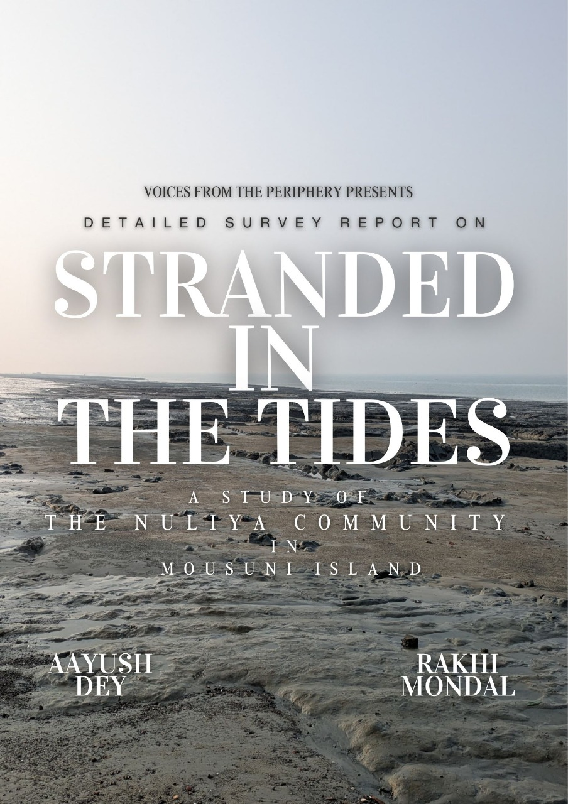
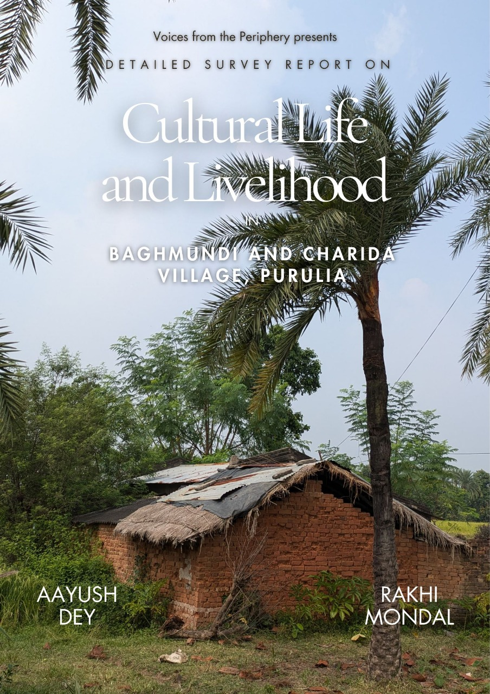
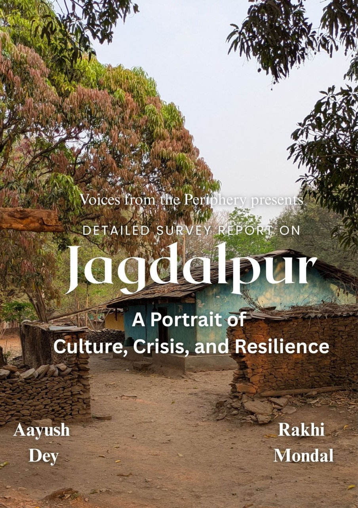
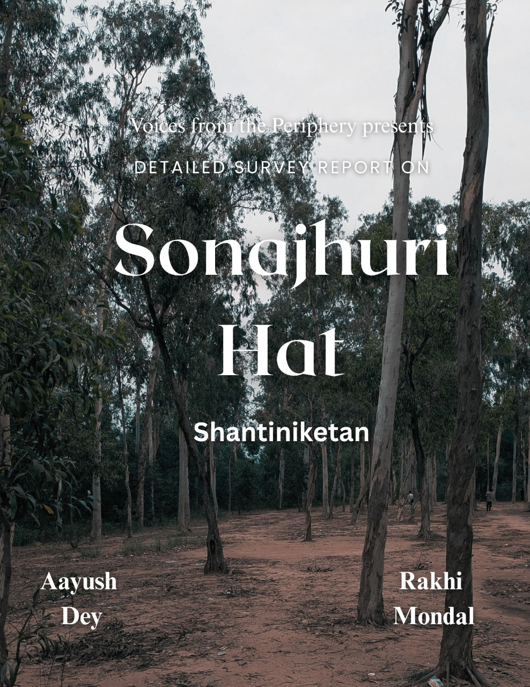
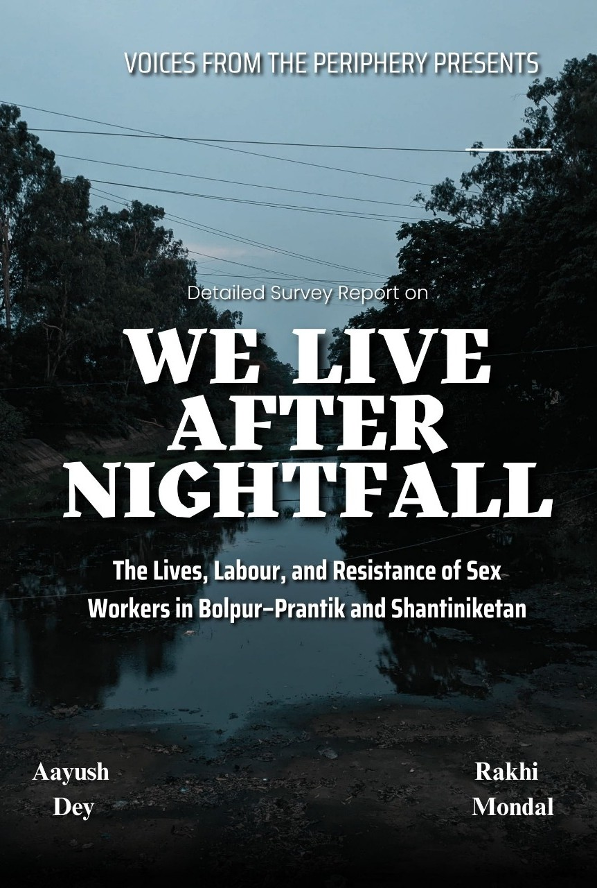
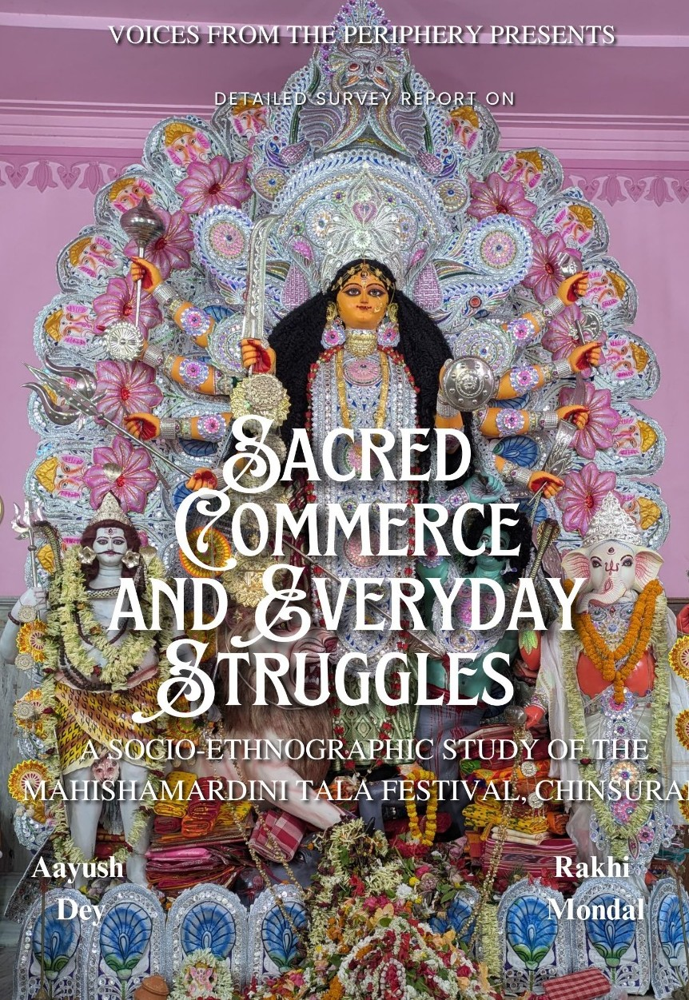

Call for the paper:
The Tales of the Marginals
Voices From The Periphery
Khātirāt-e Fārāmūsh Shode
Home
Know Us
Lectures
Anthropology
History
Literature
Political Science
Sociology
Subaltern Studies
Posters
Speakers
Books
About
Files
Tales of the Marginals
Buy Journal
About
Team and Contact
Author's Guidelines
Archives
Oral Archives
About
Tribal Myths and History
Partition and Post Partition
Naxalbari Movement Archives
Era of '80s '90s
Case Studies
About
Files
Blog
Gallery
Announcements
Contact Us
Case Study files

Case Study on Nuliya Community, Mousuni Island, West Bengal
Download Here

Case Study on Marginal people of Baghmundi and Charida Village, Purulia, West Bengal
Download Here

Case Study on Marginal People of Jagdalpur, Bastar, Chattishgarh
Download Here

Case Study on Sonajhuri Hat, Bolpur, West Bengal
Download Here

Case Study on Sex-Workers of Prantik, West Bengal
Download Here

Case Study on Sellers of Mahismardini Festival, Chinsurah, Hooghly, West Bengal
Download Here
Case Study on Village Workers of Smith Village, Meghalaya
Download Here